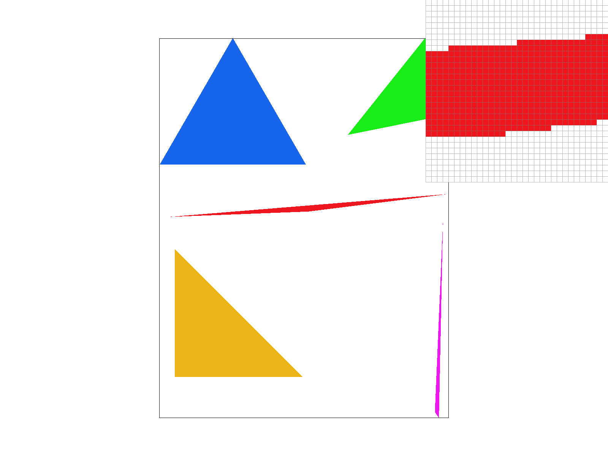
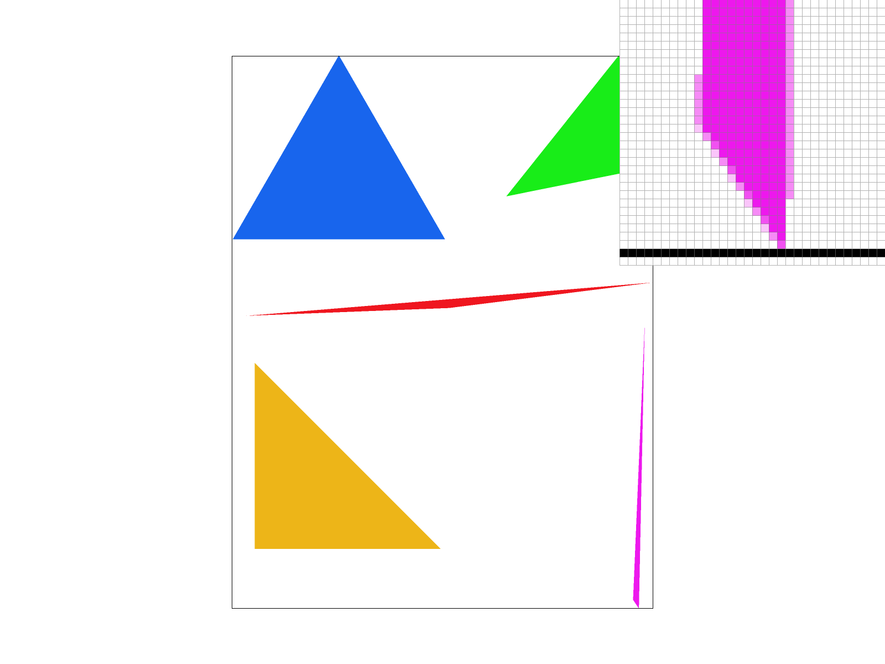
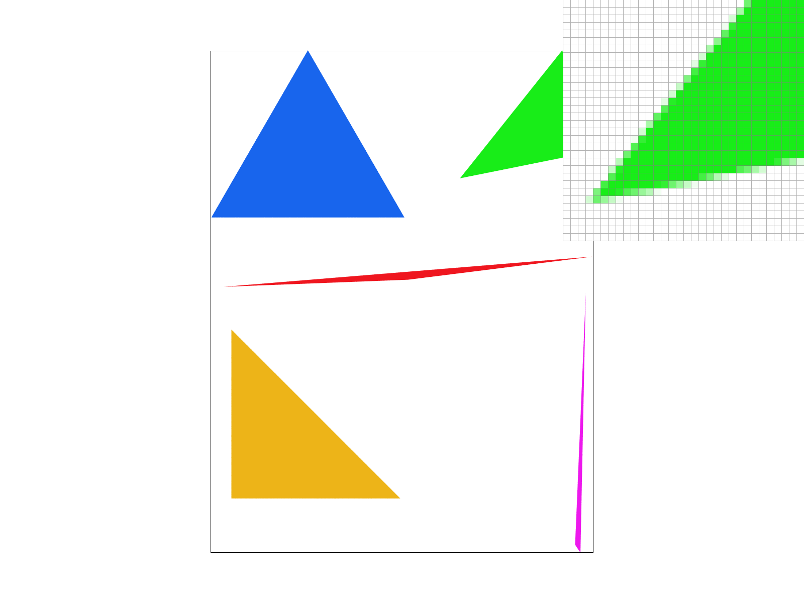
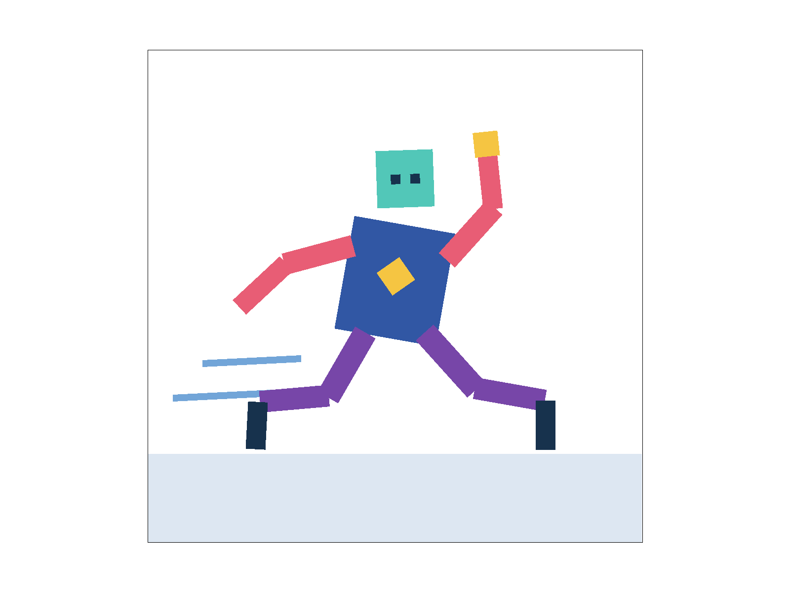
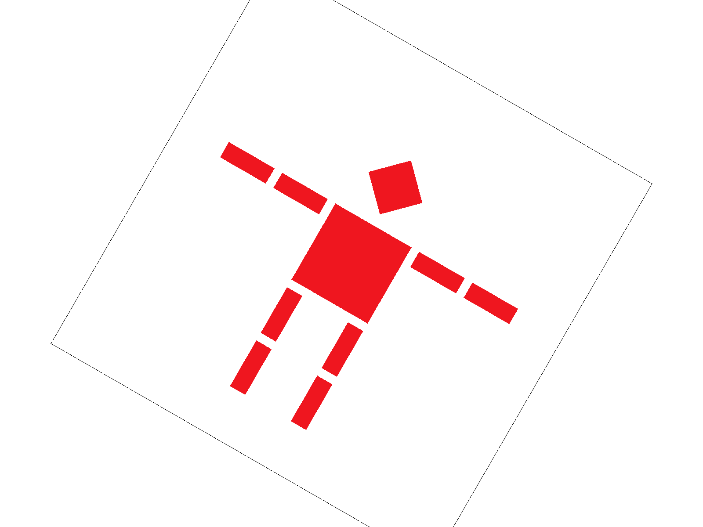
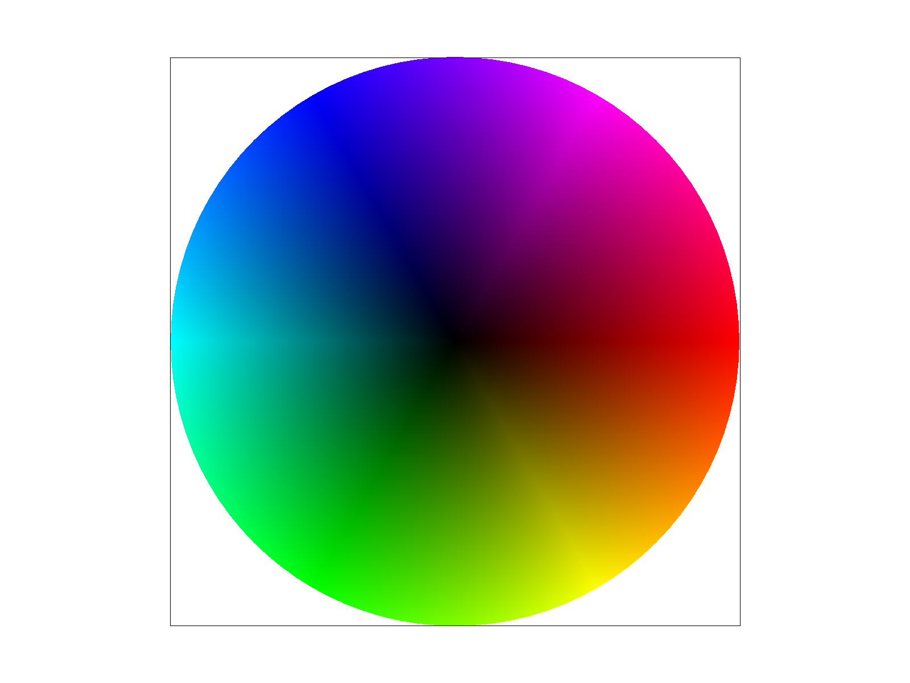
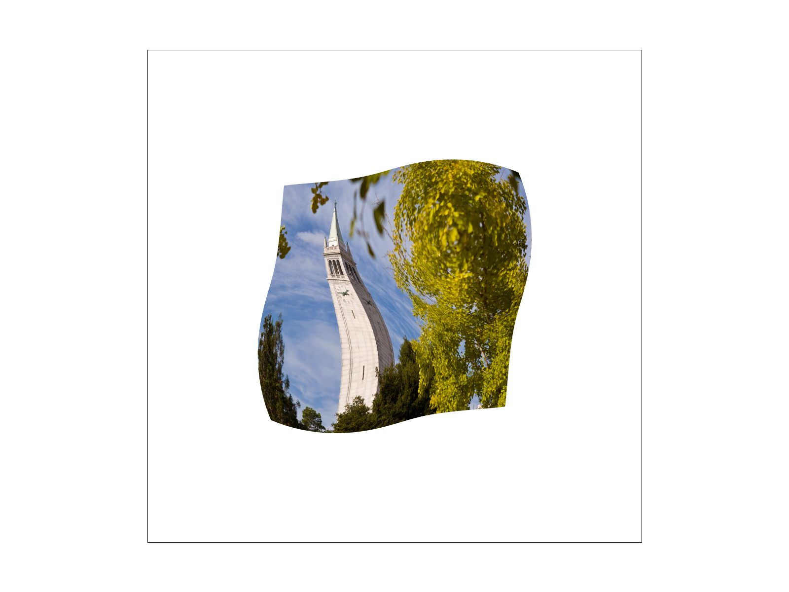
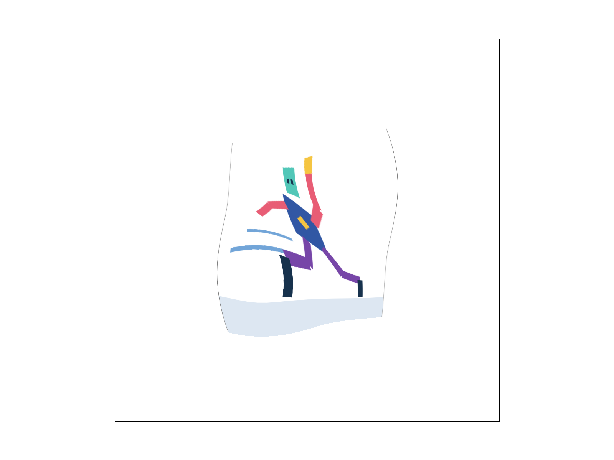

I rasterize each triangle by sampling pixels at their centers,
(x + 0.5, y + 0.5). For each triangle edge, I use an
edge function to determine which side of the edge contains the sample.
I first put the vertices in a consistent clockwise order, so a sample
is covered when all three edge values are nonnegative. The inclusive
comparison also draws samples that lie exactly on an edge. Normalizing
the winding allows the same test to work whether the vertices were
originally supplied clockwise or counterclockwise.
I begin with the smallest axis-aligned bounding box containing the
triangle and clip that box to the framebuffer. I then process the box
one scanline at a time. On each row, the three edge inequalities give
me the first and last covered pixel. Since a triangle is convex, every
pixel between those endpoints is covered, so I fill that span using
fill_pixel().
This algorithm is no worse than testing every sample in the bounding
box. If the clipped box is W pixels wide and H pixels
high, a basic bounding-box implementation performs
W * H point-in-triangle tests. My implementation does a
constant amount of work for the three edges on each of the H
rows and fills K covered pixels, giving
O(H + K) work. Since K <= W * H, this
avoids point-in-triangle tests for uncovered samples while remaining
within the work bound of bounding-box rasterization.

basic/test4.svg at the default viewing parameters, with
the pixel inspector centered on the edge of the thin red triangle.
Beyond simple bounding-box rasterization, I normalize the winding once
per triangle and clip its bounding box before entering the loops. I
write each edge function as A*x + B*y + C. Moving down
one row then updates its value by adding B instead of
recalculating the complete expression. On each row, I solve the three
edge inequalities for the covered horizontal span, so the inner loop
fills only covered samples rather than testing the entire bounding-box
row. I use double for the incremental edge values to avoid
accumulated rounding error along shared triangle edges.
I measured the implementations in a Release build using
std::chrono::high_resolution_clock. Each run rasterized
the same large, partially offscreen triangle 100 times into a
1024-by-1024 sample buffer. The table reports the average time per
triangle; it does not include SVG parsing or presentation overhead.
| Implementation | Average time per triangle | Speedup over baseline |
|---|---|---|
| Basic bounding-box sampling | 1.980 ms | 1.00x |
| Incremental edges and clipped bounds | 1.006 ms | 1.97x |
| Incremental scanline spans | 0.458 ms | 4.32x |
The final scanline implementation took approximately 77% less time
than the basic version in this benchmark. Its output matched the
supplied reference images for basic/test3.svg through
basic/test6.svg.
Supersampling reduces aliasing by estimating how much of a pixel is
covered rather than making one binary decision for the entire pixel.
For a sample rate of R, I place
sqrt(R) * sqrt(R) samples on a regular grid within every
pixel. Each sample independently stores either the triangle color or
the previous background color. Averaging those samples produces an
intermediate edge color that approximates fractional pixel coverage.
I store the samples in sample_buffer as a row-major,
higher-resolution framebuffer. If the output is W by H
and there are N samples along each side of a pixel, the sample
buffer is (W * N) by (H * N). I multiply the
triangle coordinates by N and run the scanline rasterizer on this
higher-resolution grid. A high-resolution sample at integer coordinates
(sx, sy) represents the screen-space location
((sx + 0.5) / N, (sy + 0.5) / N).
Several parts of the rasterization pipeline changed. Both
set_sample_rate() and
set_framebuffer_target() resize the buffer to
width * height * sample_rate entries, and
clear_buffers() resets every sample before a redraw.
Triangles write individual subpixel samples. Points and lines are not
supersampled, so fill_pixel() writes their color to every
sample belonging to the selected output pixel. Finally,
resolve_to_framebuffer() averages each pixel's samples and
converts the floating-point color back to three 8-bit framebuffer
channels.

At sample rate 1, the single sample is either inside or outside the triangle, so pixels along the thin magenta edge jump directly between magenta and white and form a visible staircase. At sample rate 4, an edge pixel can contain zero through four covered samples, producing several intermediate colors. At sample rate 16, the sixteen samples provide still finer coverage levels. In the pixel inspector, this can be seen as additional partially colored cells along the boundary. These intermediate colors make the triangle edge appear smoother even though the final framebuffer has the same resolution in all three images.
I added deterministic jittered sampling as an alternative to the regular
grid. I still divide each pixel into an N-by-N grid, but I
move each sample from the center of its cell to a pseudo-random position
inside that same cell. The random offset is generated from the pixel and
sample indices, so it remains identical every time the scene is redrawn.
This keeps the useful coverage of stratified sampling without producing
flicker. Pressing J switches between the grid and jittered
patterns.

Both images use sixteen samples per pixel and place the pixel inspector over the same diagonal green edge. The regular grid creates a repeating, structured pattern of partial coverage because neighboring pixels test the edge at identical offsets. Jittering breaks up that alignment, so the coverage changes are less regularly correlated across the edge. The full images remain similar because both methods are stratified, while the magnified pixels reveal the different sampling patterns.
I implemented translation, scaling, and rotation as 3-by-3 matrices in homogeneous coordinates. Translation stores its horizontal and vertical offsets in the last column, scaling places the two scale factors on the diagonal, and rotation uses sine and cosine after converting the input angle from degrees to radians. Multiplying a point by these matrices produces its transformed position, while multiplying matrices composes multiple operations. Nested SVG groups therefore form a hierarchy in which a child inherits all of its parent groups' transforms.
For my custom my_robot.svg, I
wanted Cubeman to look energetic rather than remain in the starter
pose, so I made him run toward the right while waving overhead. The
torso and head lean forward, one arm trails behind, and the raised arm
uses separate shoulder and elbow rotations to create the wave. Each leg
also has nested hip, knee, and foot transforms, which let the two legs
form opposite parts of a running stride. I changed the colors, added a
chest emblem, ground, and motion lines to make the direction and motion
more apparent.

my_robot.svg at the default
viewing parameters.
I added two keyboard controls for rotating the entire viewport. Pressing
[ rotates it by negative 10 degrees, and pressing
] rotates it by positive 10 degrees. I store the angle
separately for every loaded SVG, which lets the existing pan and zoom
matrix remain unchanged. Pressing the space bar restores the default
view and resets the angle to zero.
The SVG-to-NDC matrix first centers and scales the SVG into the unit
square. I insert the viewport rotation after that step and before the
NDC-to-screen matrix. To rotate around the center rather than the NDC
origin, the new matrix is
T(0.5, 0.5) * R(angle) * T(-0.5, -0.5). The complete
transform is therefore
NDC-to-screen * centered rotation * SVG-to-NDC. I use the
same composed matrix for the SVG and its canvas outline, so they rotate
together while the screen framebuffer stays fixed.

], producing a 30-degree viewport rotation.
Barycentric coordinates describe a point using three weights, one for each vertex of a triangle. I call the weights \(\alpha\), \(\beta\), and \(\gamma\), and they always add to one. At the first vertex the weights are \((1, 0, 0)\), at the second they are \((0, 1, 0)\), and at the third they are \((0, 0, 1)\). Moving through the triangle changes the weights linearly. A point on an edge has a zero weight for the opposite vertex, while a point inside the triangle has three nonnegative weights.
For every sample, I calculate the three weights from signed triangle area ratios. The interpolated color is \[C(p) = \alpha C_0 + \beta C_1 + \gamma C_2.\] This means the color exactly matches a vertex color at that vertex and becomes a proportional blend everywhere between the vertices. I use the same weights for the point-in-triangle test: if all three are nonnegative, the sample is covered. Degenerate triangles are skipped, and the bounding box is clipped to the framebuffer before sampling.

svg/basic/test7.svg at the default view and sample rate 1.
The wheel is built from many narrow triangles that share the black
center. Barycentric interpolation blends each triangle's center and
outer vertex colors, producing smooth transitions within every wedge.
Pixel sampling chooses a color from a texture image for a sample on a
textured triangle. I first use the sample's barycentric coordinates to
interpolate the triangle's three texture coordinates. This produces a
normalized (u, v) location in the texture. The rasterizer
then asks the texture for a color at that location and stores the result
in the sample buffer.
For nearest-neighbor sampling, I convert (u, v) to full-resolution
texel coordinates, round to the closest texel, and return that texel's
color. This method needs only one texture lookup and preserves hard texel
boundaries, but it can look blocky or jagged. For bilinear sampling, I
find the four texels surrounding the texture position. I linearly blend
the top and bottom pairs in the horizontal direction, then blend those
two results vertically. Bilinear sampling costs four texture lookups but
produces smoother transitions when the sample falls between texel centers.
Both implementations clamp coordinates to the texture boundary.

The nearest-sampled images show sharper steps between texels, especially along high-contrast details and where the texture is viewed at an angle. Bilinear sampling softens those steps by blending neighboring texels. Increasing the sample rate from 1 to 16 mainly improves the triangle's silhouette and other subpixel edges, while also averaging more texture lookups near those edges. Bilinear sampling still produces smoother transitions inside the textured surface.
The difference between nearest and bilinear sampling is largest when a screen sample maps between texture texels, particularly in a texture with high-frequency or high-contrast content. The methods appear more similar when the texture is magnified enough that large regions map near texel centers, or when neighboring texels already have similar colors.
Level sampling chooses a mipmap resolution that is close to the texture's projected size on the screen. A distant or strongly compressed surface can map one screen pixel across many texels. Sampling only the original image would select too little of that detail and cause aliasing. A mipmap stores progressively filtered images at half the width and height, so the rasterizer can sample a level whose texels represent an appropriate area of the original texture.
For each covered sample, I interpolate texture coordinates at
(x, y), (x + 1, y), and
(x, y + 1). In get_level(), I subtract the
center coordinate from its two neighbors and scale the resulting
derivatives by the full-resolution texture width and height. I take the
larger length of the horizontal and vertical derivative vectors as the
texture footprint, ρ, and calculate
level = max(0, log2(ρ)).
With L_ZERO, I always sample the original texture. With
L_NEAREST, I round the computed level and sample the closest
mipmap. With L_LINEAR, I sample the mip levels immediately
above and below the continuous level and blend between them. The pixel
sampling method is independent: either nearest-neighbor or bilinear
sampling can be used at each chosen level. Combining bilinear pixel
sampling with linear level sampling gives trilinear filtering.
L_ZERO has no mip-selection work but
aliases badly during minification. L_NEAREST selects one
mipmap and greatly improves minification. L_LINEAR reads two
levels and removes abrupt transitions between them, at additional cost.
A complete mipmap uses about one third more texture memory than its base
image.
For these comparisons, I used the Cubeman image I created for Task 3 as a custom PNG texture and mapped it onto the provided perspective-like textured mesh. The tilted, compressed regions make the effects of level sampling visible. All four images use one sample per pixel.
L_ZERO + P_NEAREST.L_ZERO + P_LINEAR.L_NEAREST + P_NEAREST.L_NEAREST + P_LINEAR.
The two L_ZERO results retain the finest source detail even
where many texels project into a small screen area, which creates broken
edges and high-frequency speckling. Bilinear pixel sampling softens nearby
texels but cannot fully solve this minification problem. The
L_NEAREST results use prefiltered mip levels in the compressed
regions, noticeably reducing that aliasing. Combining the selected mip
level with bilinear pixel sampling gives the smoothest result of these four.
Isotropic mipmapping represents a pixel's texture footprint with one number. It uses the longer of the two screen-space texture derivatives to choose a square filtering region. This prevents aliasing, but it can blur the other direction too much when a surface is viewed at a steep angle and the footprint is long and narrow.
My anisotropic filter keeps the two derivative lengths separate. The shorter length selects a continuous mip level, while the longer derivative provides the direction and extent of a line through the footprint. I place between one and eight evenly spaced samples along that line. Each sample is filtered between adjacent mip levels and the resulting colors are averaged. For a footprint requiring more than eight samples, I select a slightly coarser mip level so the eight samples still cover its full length. This is a deliberately small implementation of the main anisotropic-filtering idea: filter more in the direction that is more compressed while retaining detail in the perpendicular direction.
L_ZERO + P_NEAREST.L_ZERO + P_LINEAR.L_LINEAR + P_LINEAR.
P_LINEAR.Nearest sampling has the sharpest aliasing, and bilinear sampling only smooths the immediate texel neighborhood. Trilinear filtering removes most of the minification artifacts, but its square footprint softens details in both directions. The anisotropic result remains stable in the stretched regions while keeping edges and narrow colored shapes more distinct along the less-compressed direction.
I measured the filtering functions in a Release build using
clock(). Each run performed 500,000 samples from a 1024-by-1024
texture with a 32-texel horizontal footprint and a 2-texel vertical
footprint. The values below are averages of ten runs after one warm-up run.
This isolates texture-filtering cost from SVG parsing and screen display.
| Filtering method | Time for 500,000 samples | Relative to nearest |
|---|---|---|
| Nearest | 4.330 ms | 1.00x |
| Bilinear | 9.480 ms | 2.19x |
| Nearest mip level | 7.946 ms | 1.84x |
| Trilinear | 15.451 ms | 3.57x |
| Eight-tap anisotropic | 85.406 ms | 19.72x |
The anisotropic method is the slowest because this deliberately clear implementation may evaluate eight trilinear samples, or up to 64 texel lookups, for one output sample. Its benefit is strongest for oblique, directionally compressed texture mappings where ordinary mipmapping loses useful detail.
code code code{kind=link}